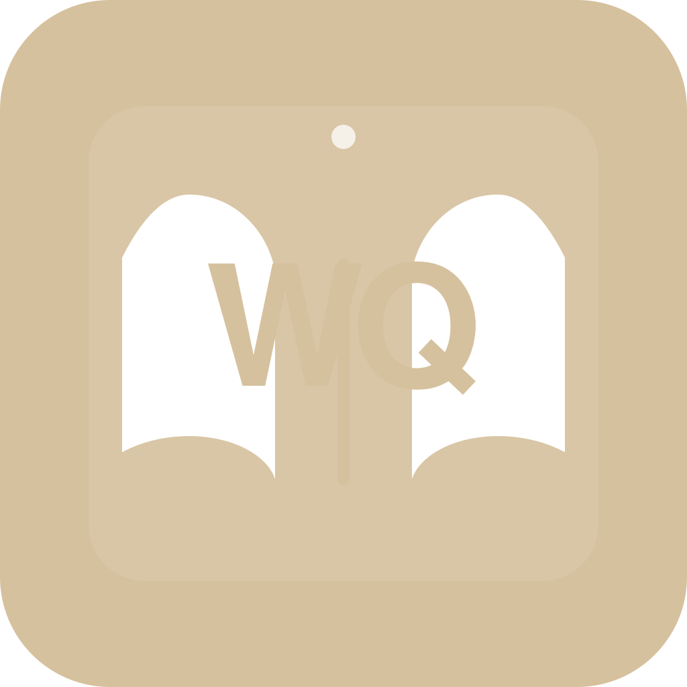
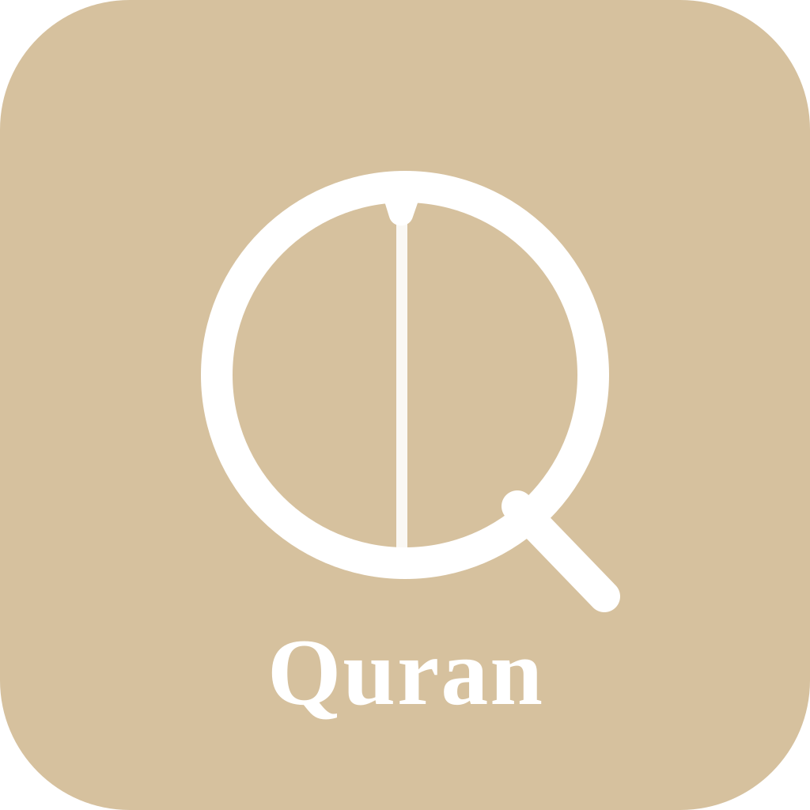

WriteQuran Icon Concepts
Three directions: book-based monogram, pen-and-Q symbol, and a refined wordmark icon.

Concept 1

Three directions: book-based monogram, pen-and-Q symbol, and a refined wordmark icon.

